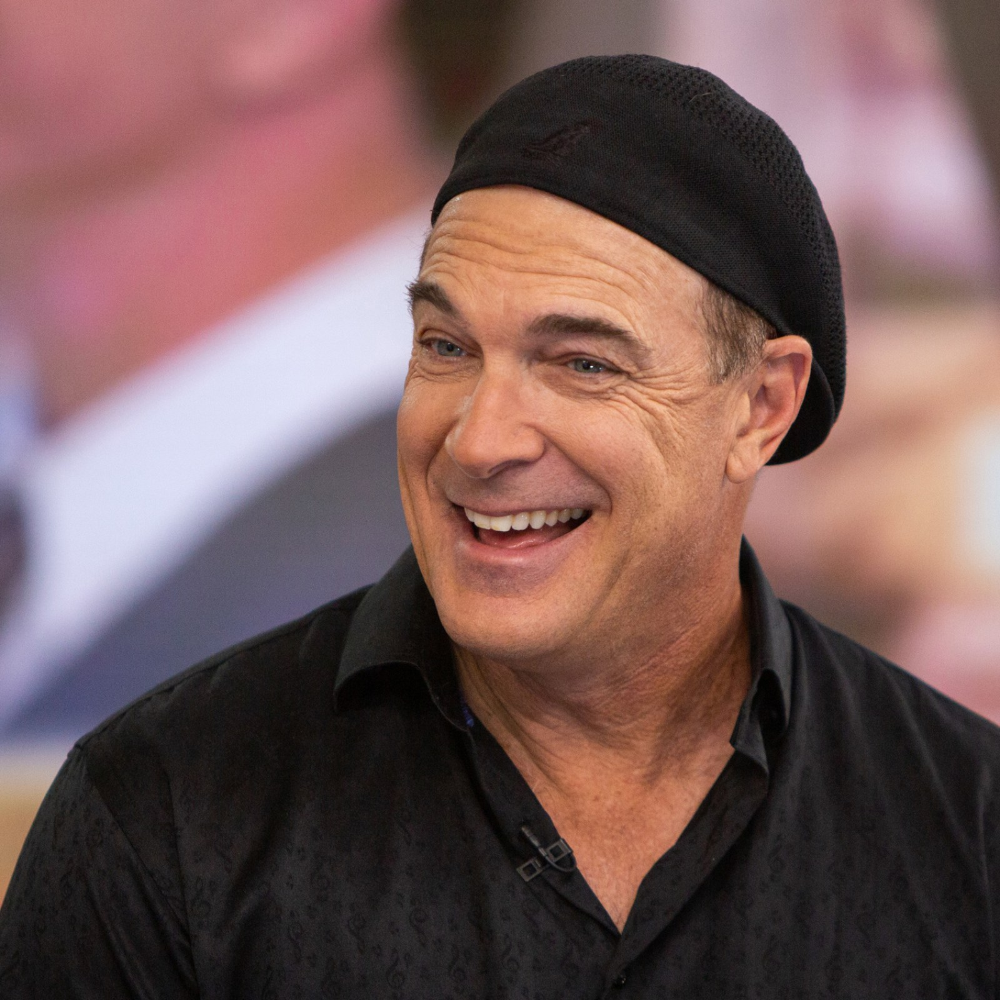
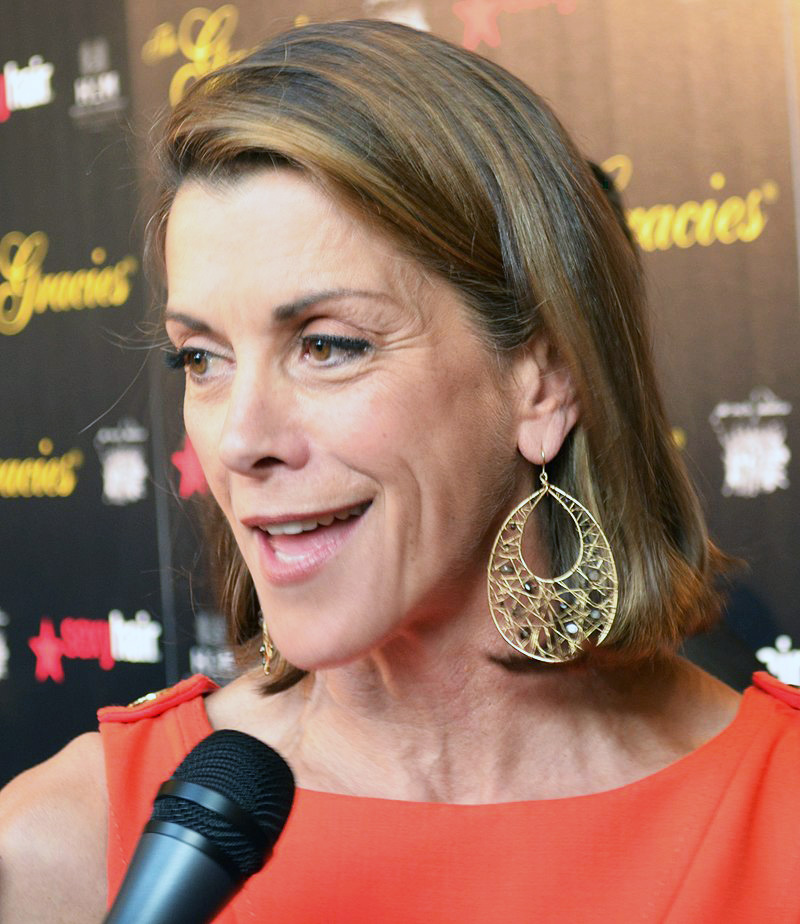

The Emperor's New Groove - Voice Cast
David Spade as Emperor Kuzko
Spade plays the entitled, pampered and arrogant 18-year-old emperor
of the Inca Empire. Spade is an American stand-up comedian, actor and
podcaster. His comedic style, in both his stand-up material and
acting roles, relies heavily on sarcasm and self-deprecation. Aside
from his role as Emperor Kuzco, Spade is known for his roles on
Saturday Night Live, Tommy Boy, Just Shoot Me!,
and more.

John Goodman as Pacha
Goodman plays the brave, kind, and humble village leader. Goodman is
an American actor who rose to prominence in television before
becoming an acclaimed and popular film actor, having received
various accolades including Emmy, Golden Globe and Screen Actors
Guild awards.

Eartha Kitt as Yzma
Kitt plays Kuzco's evil, elderly advisor who seeks to usurp him.
Kitt was an American singer and actress known for her highly
distinctive singing style and her 1953 recordings of "C'est si bon"
and the Christmas novelty song "Santa Baby", among other US Top 30
entries. Many years later, Kitt found a new generation of fans
through her various voice acting roles in the last decade of her
life.

Patrick Warburton as Kronk
Warburton plays Yzma's hapless but unintelligent muscular henchman.
Warburton is an American actor who has been featured on
Seinfeld, The Tick, Less than Perfect,
Rules of Engagement and more. Warburton has also voice acted
on Family Guy, Scooby-Doo! Mystery Incorporated, and
The Venture Bros.

Wendie Malick as Chicha
Malick plays Pacha's supportive, pregnant wife. Malick is an American
actress and former fashion model, known for her roles in various
television comedies. She starred on Dream On and alongside
The Emperor's New Groove co-star David Spade on
Just Shoot Me!.

Kellyann Kelso as Chaca
Kelso plays Pacha and Chicha's daughter. Kelso is an American former
voice actress known for her roles on
The Emperor's New Groove, Power Rangers Lost Galaxy
and M.U.G.E.N.

Eli Russell Linnetz as Tipo
Linnetz plays Pacha and Chicha's young, mischievous son. Linnetz is
a former actor, known for his roles on The Emperor's New Groove,
Afterglow and Tortilla Soup.

Bob Bergen as Bucky the Squirrel
Bergen plays Kronk's companion who hates Yzma and has an unpleasant
encounter with Kuzco. Bergen is an American voice actor who voices
Looney Tunes characters Porky Pig and Tweety, and has voiced
characters in the English dubs of various anime. He is the
fifth-highest-grossing actor of all time.

Tom Jones as The Theme Song Guy
Jones plays Kuzco's personal theme song conductor. Jones is a Grammy
Award and Golden Globe Award-winning Welsh singer/actor who has sold
over 100 million records over his career, with 36 top 40 hits in the
U.K. and 19 in the U.S.

John Fiedler as Rudy
Fiedler plays the well-meaning old man who is first thrown out a
window by Kuzco's guards, then later befriends him. Fiedler was an
American actor whose career in stage, film, television and radio
lasted more than 55 years. He was typecast for delicate, quiet,
nerdy characters, evidenced by his roles on 12 Angry Men,
A Raisin in the Sun, The Bob Newhart Show, and more.
Patti Deutsch as Mata
Deutsch plays the waitress at Mudka's Meat Hut. Deutsch was an
American actress who was well known as a recurring guest star on
countless shows, as well as a frequent commercial actress, including
classic spots for Folgers coffee and Charmin bathroom tissue.